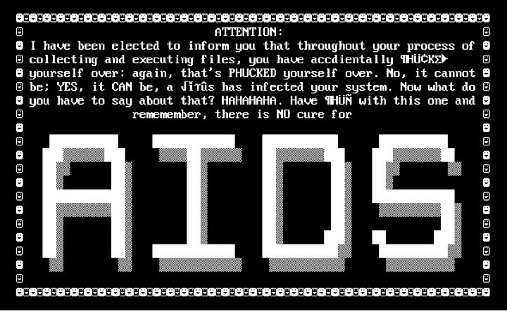
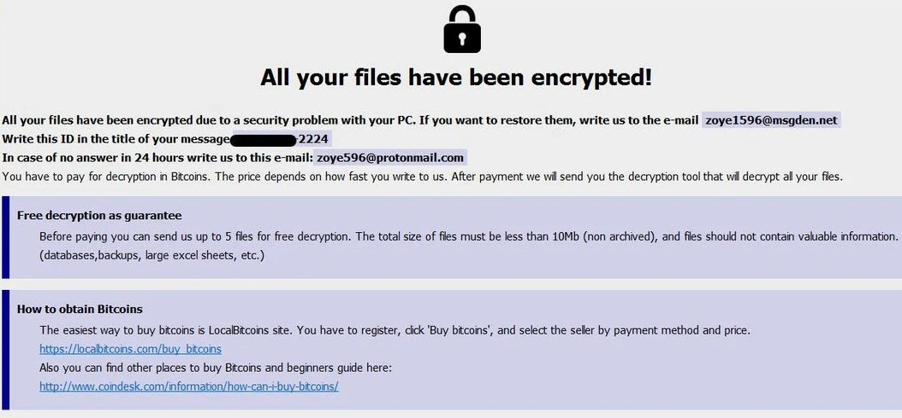
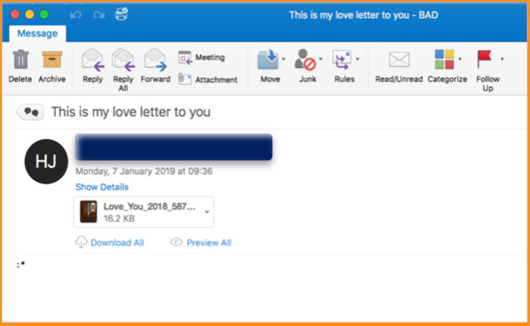
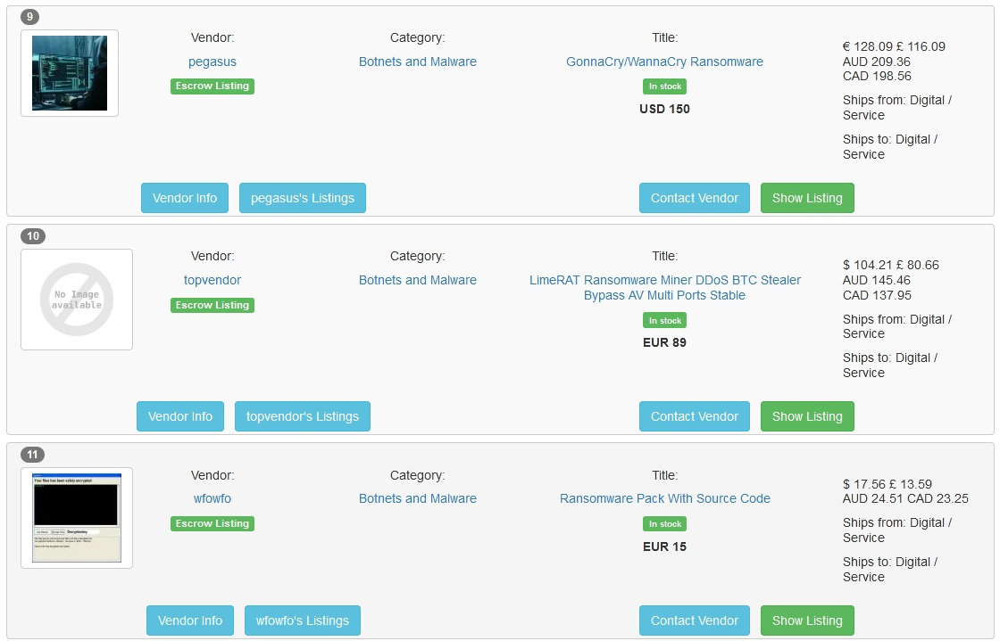
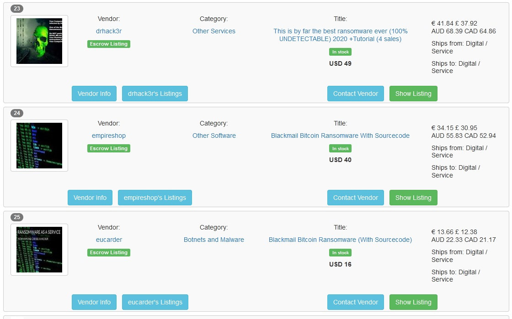
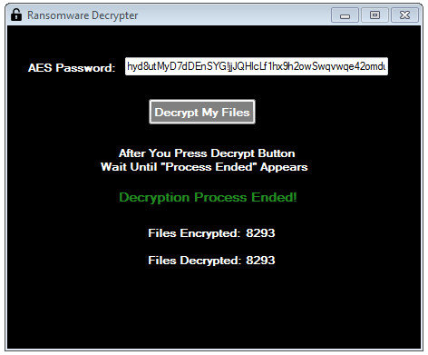
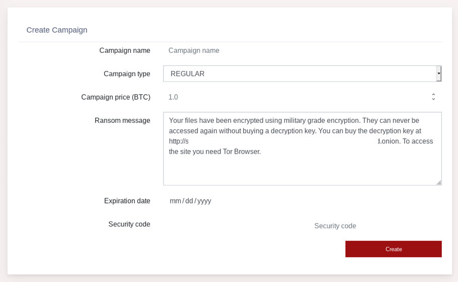
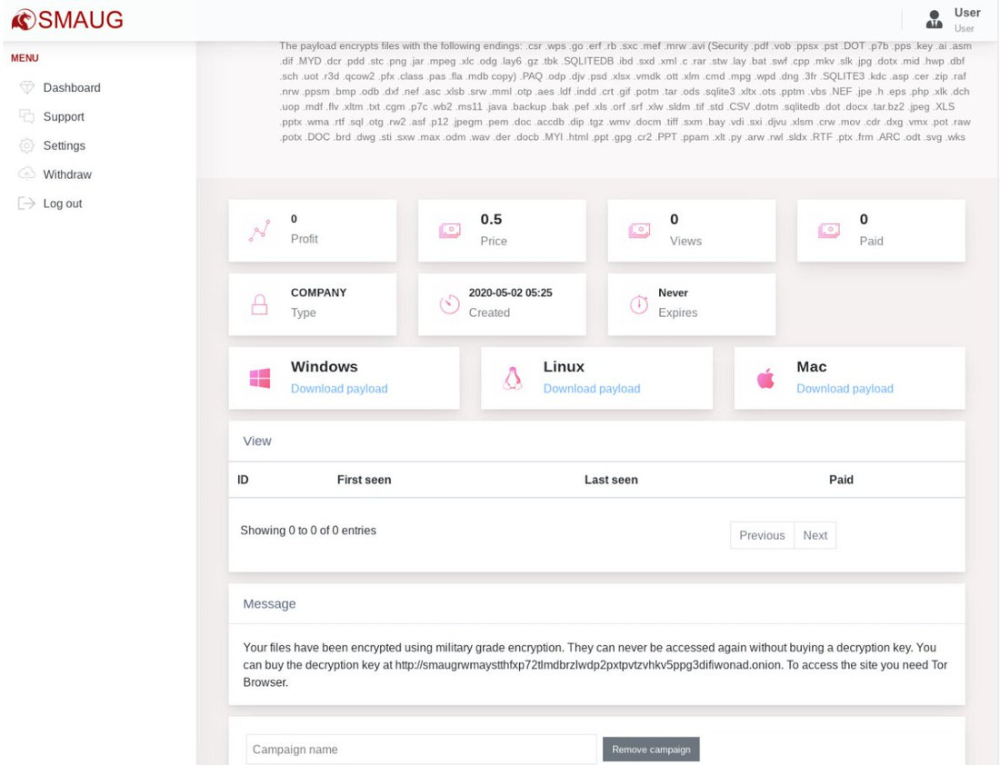
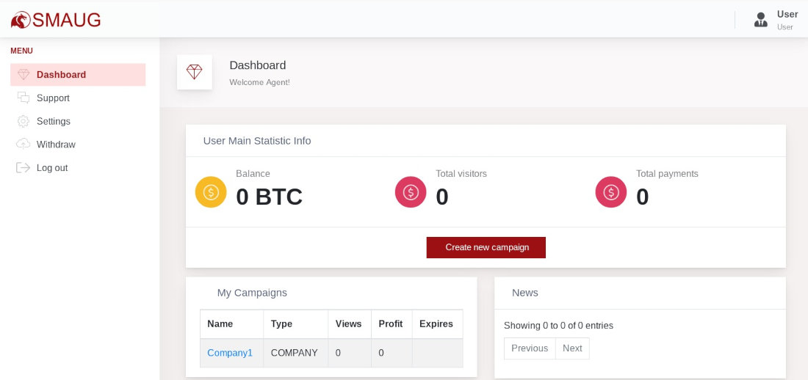

Отличная статья:Вымогательство как услуга. Кто и за сколько предлагает в даркнете помочь с вымогательством
Эпидемии троянов‑шифровальщиков регулярно сменяют одна другую, и их масштабы все растут. А за кулисами этой проблемы стоят дельцы, которые предлагают желающим легкий способ стать хакерами (и с хорошей вероятностью — заработать судимость). В этой статье я расскажу о том, как и за сколько в даркнете предлагают услуги и софт для вымогания денег.
Но начнем мы с того, что разберемся в истории вымогательской малвари.
Эволюция цифрового гоп-стопа
Первая зафиксированная эпидемия шифровальщика произошла в 1989 году, когда норвежский биолог Джозеф Попп разослал по почте дискету, этикетка которой обещала просветительскую информацию о СПИДе. В реальности программа внедрялась в AUTOEXEC.BAT, скрывала папки и повреждала файлы. Во время следующей загрузки пользователь видел предложение обновить лицензию ОС, отправив 189 долларов по почте в Панаму на счет компании PC Cyborg Corporation, дальше компьютер не загружался.
В основе AIDS лежала симметричная криптография, то есть для шифрования и расшифровки информации использовался один и тот же ключ, поэтому таблетку от вируса сделали довольно быстро. Поппа вскоре нашли, но признали невменяемым и отправили на лечение. Создатель первого вымогателя прославился тем, что носил на голове картонную коробку для защиты от радиации.
Предупреждение о заражении AIDS
На протяжении следующих шестнадцати лет случаи заражения программами‑вымогателями были все еще редки, несмотря на развитие интернета. Все изменилось в 2005 году после того, как по сети стала распространяться вредоносная программа GPCoder.
GPCoder зашифровывал информацию, используя продвинутый для тех времен криптографический алгоритм RSA. Чуть позже появился Archievus, который энкриптил файлы только в папке «Мои документы». Оба вредоноса приносили создателям малый профит, потому что антивирусы легко их находили и удаляли.
Вредонос Vundo, который начали применять для вымогательства Bitcoin в 2009 году, тоже провалился. Программисты компании FireEye написали скрипт для расшифровки данных за несколько дней и оставили девелоперов Vundo без прибыли.
Сообщение с требованием о выкупе от Vundo
В 2011 году возник новый вид программ‑вымогателей — WinLock. Вместо того чтобы зашифровывать информацию, локеры блокировали доступ к Windows и выводили на экран фейковое меню для активации ОС. Жертвам предлагали позвонить в службу поддержки или отправить SMS, чтобы получить код. За звонок и сообщение взимали плату, которая перечислялась прямиком в карман рэкетирам.
Тем не менее бизнес‑модель, основанная на применении локеров, оказалась провальной. В 2012 году вымогатели заработали лишь 5 миллионов долларов. Звучит много, но по меркам современных угроз — ерунда. Поэтому уже в следующем году хакеры вернулись к истокам цифрового шантажа и стали использовать модифицированную версию шифровальщика CryptoLocker.
Главное отличие CryptoLocker от Vundo заключалось в том, что зашифрованные файлы было невозможно восстановить, так как для их дешифровки требовался 2048-битный ключ, который можно было получить в онлайновой службе после оплаты. Всего лишь за два месяца доход создателей малвари достиг 27 миллионов долларов в биткойнах.
Меню оплаты CryptoLocker
В 2014 году после захвата антивирусными специалистами ботнета Gameover ZeuS, через который распространялся CryptoLocker, на рынке программ‑вымогателей начали доминировать его клоны — CryptoWall и TorrentLocker. В 2016 году специалисты обнаружили первый вирус‑вымогатель под названием KeRanger, предназначенный для заражения маков. Спустя несколько месяцев кибербезопасники идентифицировали многопрофильный троян Ransom32, способный инфицировать компы с Windows, Mac или Linux.
В мае 2017 года с появлением крипточервя WannaCry началась новая эра в истории цифрового гоп‑стопа. WannaCry эксплойтил уязвимость EternalBlue в Windows, устанавливал бэкдор, загружал код шифровальщика и, заразив один компьютер, быстро распространялся по локальной сети. За год червь пролез в 520 тысяч устройств и нанес ущерб на 4 миллиарда долларов. Современник WannaCry — крипточервь Petya, который использовал тот же самый эксплоит Windows. Вред от «Пети» превысил 3 миллиарда долларов.

Карта заражения WannaCry
В 2018 году на электронную почту пользователей сети начали приходить письма с оригинальным вредоносом GandCrab. Вымогатели соблазняли юзеров любовными посланиями и архивами с романтичными названиями, например, Love_You_2018. Но архивы были с изюминкой — дистрибутивом, загружающим GandCrab. В 2019 году разработчики «Краба» повесили клешни на гвоздь, сорвав куш примерно в 2 миллиарда долларов.
Любовное послание от GandCrab
Эстафетную палочку перехватили злые гении, стоящие за изобретением вымогателя REvil, известного также под именем Sodinokibi. ИБ‑специалисты нашли совпадения в кодах GandCrab и Sodinokibi, а также выяснили, что в обоих используются практически одинаковые функции декодирования строк. Поэтому эксперты уверены, что REvil — это прямой наследник GandCrab.
На волне хайпа вокруг WannaCry и Petya в даркнете запустили сервисы Ransomware as a Service (RaaS) — тулкиты и платформы для выполнения атак и получения выкупа. Львиная доля клиентской базы RaaS приходится на ламеров, которые стремятся срубить капусту, но не хотят ничего программировать самостоятельно. Вымогательство как услуга представляет собой модель сотрудничества между операторами программ‑шантажистов и так называемыми агентами.
Ransomware на продажу
На крупнейшем международном маркетплейсе я нашел десяток объявлений, связанных с программами‑вымогателями. Вот они.
1. Исходный код KingLocker на Python для Windows за 99 евро
Вендор утверждает, что после запуска исполняемого файла малварь подключается к панели управления сервером, скачивает ключ, зашифровывает данные на устройстве и открывает веб‑страницу с требованием выкупа в Bitcoin. Какую‑либо информацию о случаях заражения KingLocker я не обнаружил. Первое и единственное упоминание о вирусе на форуме Raid датируется 12 июля 2020 года.
2. Вредонос Sodinokibi/REvil за 2000 долларов
По сведениям Panda Security, Sodinokibi — самая прибыльная программа‑шантажист по итогам четвертого квартала 2019 года. Вредонос генерирует уникальный ID и ключи для каждого устройства, зашифровывает файлы, меняет обои на рабочем столе и выводит на экран инструкцию по дешифровке, в которой указан URL-адрес формы для восстановления доступа к данным.
3. Пакет исходных кодов программ вымогателей за 15 евро
Состоит из:
4. WannaCry за 150 долларов
Троян «ХочуПлакать» еще рано хоронить, ведь в первом квартале этого года на его долю пришлось 40,5% обнаруженных вымогателей. Но после эпидемии вируса в 2017 году Microsoft выпустила патчи для версий ОС вплоть до XP, где была устранена уязвимость, которую эксплуатировал WannaCry. Поэтому первоначальная сборка программы‑шантажиста уже не может установить бэкдор для загрузки и запуска исполняемого файла на подавляющем большинстве компьютеров.
5. Модульный троян LimeRAT за 89 евро
Многофункциональный вредонос, разработанный для шифрования данных на жестком диске и флешках, установки майнера XMR, кражи данных о криптокошельках и выполнения DDoS-атак. Вирус распространяется через файлы Excel и USB-накопители, умеет самоудаляться, если обнаружит виртуальную машину.
6. Исходный код Blackmail Bitcoin Ransomware кастомной сборки за 15 долларов
Любопытный вариант вредоноса, который можно использовать как обычный шифровальщик и инструмент для кражи Bitcoin. В режиме вымогателя программа шифрует файлы на устройстве и требует выкуп. В формате стилера троян распознаёт адреса BTC в буфере обмена и модифицирует их. Если жертва скопипастит и не проверит адрес, то битки уйдут в кошелек хакера.
7. Модульный вредонос DiamondFox за 1000 долларов
Версия DiamondFox, выпущенного в 2017 году, с обновлениями от 17 марта 2020 года. Распространяется только с помощью USB-накопителей и состоит из девяти элементов:
8. Ransomware 2020 за 49 долларов
Продавец не написал название вредоноса, но заявил, что он был создан в 2020 году и его не может обнаружить ни один антивирус. По словам вендора, малварь использует алгоритм шифрования AES и открывает на зараженном компьютере текстовый файл с требованием о выкупе в криптовалюте.
9. Blackmail Bitcoin Ransomware с исходным кодом за 40 долларов
Программа‑вымогатель не только шифрует файлы, но и модифицирует их расширение по заданному формату. Например, .docx можно автоматически заменить .design. Малварь распространяется через флешки и установочные файлы, скачанные в интернете. Для USB-накопителя существует опция автоматического запуска вредоноса через определенный временной промежуток. Особенно приятно, что в комплект входит руководство по применению.
10. Исходный код пяти программ-шантажистов Bitcoin Ransomware за 18 долларов
В эту подборку включены современные вредоносы, а также инструкции по их конфигурации и распространению. Названия малвари держатся в секрете, но вендор сообщил, что все программы новые и подходят для вымогательства виртуальных валют.
А вот русский даркнет, как обычно, разочаровал. На русскоязычных торговых площадках и форумах не продают программы‑вымогатели и не предоставляют услуги организации атак, потому что модераторы платформ банят за RaaS. Куда ни кинь, везде только вещества, кардинг и пробивы.
Шантаж под ключ
Сейчас в дарквебе работают две полноценные платформы RaaS, созданные для автоматизации и оптимизации распространения малвари и получения выкупа. У площадок разный modus operandi и условия сотрудничества, но их объединяет одно — девелоперы не продают исходный код вредоносов.
Ranion
Владельцы площадки предлагают приобрести сервисный пакет, в который входят:
Получив криптовалюту от жертвы, атакующий должен запустить декриптор, вставить ключ жертвы и выбрать опцию Decrypt My Files. После этого файлы будут автоматически расшифрованы.
Вредонос поддерживает опцию отложенного запуска и шифрования, отключает диспетчер задач, меняет обои на рабочем столе и отслеживает IP устройства. Помимо этого, предлагается приобрести дополнительный обфускатор и уникальный .onion-адрес (будет написан на баннере) за 90 долларов. Подписка на сервис на один месяц стоит 120 долларов, на шесть месяцев — 490 долларов, на год — 900 долларов.
По словам авторов проекта, 85% антивирусов не находят Ranion, оставшиеся 15% вносят файл в список подозрительных или нежелательных программ. Разработчики регулярно апдейтят вредонос и обещают рассылать обновленные версии подписчикам на электронную почту. Последний на момент написания статьи апгрейд был выпущен в сентябре 2020 года. Девелоперы утверждают, что распространяют ПО сугубо в научных целях, чтобы снять с себя ответственность за незаконные действия клиентов.
Сотрудники сайта Virus Total установили, что в 2017 году экзешник Ranion детектировали 41 из 60 антивирусов. Версию RANION v1.11, выпущенную в сентябре 2020 года, на данный момент еще не проверяли. Малварь не шифрует теневые копии файлов, благодаря этому данные можно восстановить с помощью бэкапа. Тем не менее информацию не получится расшифровать декрипторами, разработанными экспертами по кибербезопасности, потому что вредонос создает уникальные ключи.
Smaug
Площадка была открыта в мае 2020 года и позиционирует себя как ведущий проект в сфере RaaS. Регистрация на платформе стоит 0,2 BTC (2137 долларов по текущему курсу). После внесения платежа пользователь получает доступ к учетной записи и может создать кампанию по заражению компьютеров, выбрав одну из двух опций:
Судя по инструкции, каждой кампании можно присвоить произвольное название, ввести размер выкупа в Bitcoin, написать сообщение, которое будут видеть жертвы, и задать срок действия. Затем нужно выбрать операционную систему (Windows, Linux или macOS), нажать на кнопку Create и скачать исполняемый файл программы‑вымогателя.
Вредонос шифрует файлы на устройстве жертвы и открывает текстовый документ, в котором указана ссылка на портал Smaug.

Сервис предоставляет ключ для декрипта информации после перевода необходимой суммы в BTC, но дает возможность расшифровать один файл бесплатно в тестовом режиме. Платформа взимает комиссию 20% за все транзакции и автоматически начисляет Bitcoin в кошелек агента. Smaug ведет статистику кампании по трем показателям: сумме выплат, числу посетителей и количеству платежей.
Малварь шифрует информацию только на жестком диске компьютера и самостоятельно не распространяется по локальной сети, чтобы сократить вероятность обнаружения антивирусом. Разработчики Smaug запрещают выполнять атаки на территории стран СНГ, кроме того, сервис начали пиарить на русскоязычном форуме в даркнете, поэтому складывается впечатление, что за созданием платформы стоят выходцы из Содружества. Сервис берет высокую комиссию и огромную плату за регистрацию, но сервер сайта работает нестабильно и периодически отключается. То ли с поддержкой не все гладко, то ли конкуренты дидосят.
В конце сентября работники Virus Total протестировали эффективность использования антивирусов для борьбы со Smaug и выяснили, что 44 из 67 программ смогли его идентифицировать. Вредонос удаляет исходные файлы после шифрования и генерирует уникальные ключи, поэтому декрипторы не работают. Из‑за этого пострадавшим, которые хотят восстановить доступ к информации, не остается ничего иного, кроме как заплатить выкуп. Однако вирус не удаляет резервные и теневые копии файлов, поэтому бэкап — самая надежная защита от Smaug.
Выводы
Стать низшим звеном в киберпреступной пирамиде в наши времена легче легкого, и цены на вредоносное ПО начинаются с несерьезных 15 долларов. Но, я думаю, ты отлично понимаешь, почему разработчики программ‑вымогателей вместо того, чтобы применять свои творения, продают их по подписке подобно Office 365 и Adobe CS. Стоит записаться в эту очередь, и ты гарантированно станешь крайним.
Эпидемии троянов‑шифровальщиков регулярно сменяют одна другую, и их масштабы все растут. А за кулисами этой проблемы стоят дельцы, которые предлагают желающим легкий способ стать хакерами (и с хорошей вероятностью — заработать судимость). В этой статье я расскажу о том, как и за сколько в даркнете предлагают услуги и софт для вымогания денег.
Но начнем мы с того, что разберемся в истории вымогательской малвари.
Эволюция цифрового гоп-стопа
Первая зафиксированная эпидемия шифровальщика произошла в 1989 году, когда норвежский биолог Джозеф Попп разослал по почте дискету, этикетка которой обещала просветительскую информацию о СПИДе. В реальности программа внедрялась в AUTOEXEC.BAT, скрывала папки и повреждала файлы. Во время следующей загрузки пользователь видел предложение обновить лицензию ОС, отправив 189 долларов по почте в Панаму на счет компании PC Cyborg Corporation, дальше компьютер не загружался.
В основе AIDS лежала симметричная криптография, то есть для шифрования и расшифровки информации использовался один и тот же ключ, поэтому таблетку от вируса сделали довольно быстро. Поппа вскоре нашли, но признали невменяемым и отправили на лечение. Создатель первого вымогателя прославился тем, что носил на голове картонную коробку для защиты от радиации.

Предупреждение о заражении AIDS
На протяжении следующих шестнадцати лет случаи заражения программами‑вымогателями были все еще редки, несмотря на развитие интернета. Все изменилось в 2005 году после того, как по сети стала распространяться вредоносная программа GPCoder.
GPCoder зашифровывал информацию, используя продвинутый для тех времен криптографический алгоритм RSA. Чуть позже появился Archievus, который энкриптил файлы только в папке «Мои документы». Оба вредоноса приносили создателям малый профит, потому что антивирусы легко их находили и удаляли.
Вредонос Vundo, который начали применять для вымогательства Bitcoin в 2009 году, тоже провалился. Программисты компании FireEye написали скрипт для расшифровки данных за несколько дней и оставили девелоперов Vundo без прибыли.

Сообщение с требованием о выкупе от Vundo
В 2011 году возник новый вид программ‑вымогателей — WinLock. Вместо того чтобы зашифровывать информацию, локеры блокировали доступ к Windows и выводили на экран фейковое меню для активации ОС. Жертвам предлагали позвонить в службу поддержки или отправить SMS, чтобы получить код. За звонок и сообщение взимали плату, которая перечислялась прямиком в карман рэкетирам.
Тем не менее бизнес‑модель, основанная на применении локеров, оказалась провальной. В 2012 году вымогатели заработали лишь 5 миллионов долларов. Звучит много, но по меркам современных угроз — ерунда. Поэтому уже в следующем году хакеры вернулись к истокам цифрового шантажа и стали использовать модифицированную версию шифровальщика CryptoLocker.
Главное отличие CryptoLocker от Vundo заключалось в том, что зашифрованные файлы было невозможно восстановить, так как для их дешифровки требовался 2048-битный ключ, который можно было получить в онлайновой службе после оплаты. Всего лишь за два месяца доход создателей малвари достиг 27 миллионов долларов в биткойнах.
Меню оплаты CryptoLocker
В 2014 году после захвата антивирусными специалистами ботнета Gameover ZeuS, через который распространялся CryptoLocker, на рынке программ‑вымогателей начали доминировать его клоны — CryptoWall и TorrentLocker. В 2016 году специалисты обнаружили первый вирус‑вымогатель под названием KeRanger, предназначенный для заражения маков. Спустя несколько месяцев кибербезопасники идентифицировали многопрофильный троян Ransom32, способный инфицировать компы с Windows, Mac или Linux.
В мае 2017 года с появлением крипточервя WannaCry началась новая эра в истории цифрового гоп‑стопа. WannaCry эксплойтил уязвимость EternalBlue в Windows, устанавливал бэкдор, загружал код шифровальщика и, заразив один компьютер, быстро распространялся по локальной сети. За год червь пролез в 520 тысяч устройств и нанес ущерб на 4 миллиарда долларов. Современник WannaCry — крипточервь Petya, который использовал тот же самый эксплоит Windows. Вред от «Пети» превысил 3 миллиарда долларов.
Карта заражения WannaCry
В 2018 году на электронную почту пользователей сети начали приходить письма с оригинальным вредоносом GandCrab. Вымогатели соблазняли юзеров любовными посланиями и архивами с романтичными названиями, например, Love_You_2018. Но архивы были с изюминкой — дистрибутивом, загружающим GandCrab. В 2019 году разработчики «Краба» повесили клешни на гвоздь, сорвав куш примерно в 2 миллиарда долларов.

Любовное послание от GandCrab
Эстафетную палочку перехватили злые гении, стоящие за изобретением вымогателя REvil, известного также под именем Sodinokibi. ИБ‑специалисты нашли совпадения в кодах GandCrab и Sodinokibi, а также выяснили, что в обоих используются практически одинаковые функции декодирования строк. Поэтому эксперты уверены, что REvil — это прямой наследник GandCrab.
На волне хайпа вокруг WannaCry и Petya в даркнете запустили сервисы Ransomware as a Service (RaaS) — тулкиты и платформы для выполнения атак и получения выкупа. Львиная доля клиентской базы RaaS приходится на ламеров, которые стремятся срубить капусту, но не хотят ничего программировать самостоятельно. Вымогательство как услуга представляет собой модель сотрудничества между операторами программ‑шантажистов и так называемыми агентами.
Ransomware на продажу
На крупнейшем международном маркетплейсе я нашел десяток объявлений, связанных с программами‑вымогателями. Вот они.
1. Исходный код KingLocker на Python для Windows за 99 евро
Вендор утверждает, что после запуска исполняемого файла малварь подключается к панели управления сервером, скачивает ключ, зашифровывает данные на устройстве и открывает веб‑страницу с требованием выкупа в Bitcoin. Какую‑либо информацию о случаях заражения KingLocker я не обнаружил. Первое и единственное упоминание о вирусе на форуме Raid датируется 12 июля 2020 года.
2. Вредонос Sodinokibi/REvil за 2000 долларов
По сведениям Panda Security, Sodinokibi — самая прибыльная программа‑шантажист по итогам четвертого квартала 2019 года. Вредонос генерирует уникальный ID и ключи для каждого устройства, зашифровывает файлы, меняет обои на рабочем столе и выводит на экран инструкцию по дешифровке, в которой указан URL-адрес формы для восстановления доступа к данным.
3. Пакет исходных кодов программ вымогателей за 15 евро
Состоит из:
- Skiddy ScreenLocker — копия трояна Exotic;
- NxRansomware — Open Source проект, загружен на GitHub в 2016 году;
- HiddenTear — первый троян‑вымогатель с открытым исходным кодом, выложенный на GitHub в 2015 году;
- MyLittleRansomware — очередной опенсорс, разработанный в 2018 году;
- Jigsaw Ransomware — идентифицирован в 2016 году, назван в честь куклы Билли из «Пилы»;
- EDA2 Ransomware — собран на базе конструктора EDA2 и требует фиксированную плату за расшифровку — 0,1 BTC;
- CryptoLocker — легендарный старичок, сумевший заставить американских копов раскошелиться на 500 долларов;
- Andr0id L0cker — мобильный вымогатель, который блокирует доступ к Android;
- Shark Ransomware — был запущен как RaaS в клирнете в 2016 году.
4. WannaCry за 150 долларов
Троян «ХочуПлакать» еще рано хоронить, ведь в первом квартале этого года на его долю пришлось 40,5% обнаруженных вымогателей. Но после эпидемии вируса в 2017 году Microsoft выпустила патчи для версий ОС вплоть до XP, где была устранена уязвимость, которую эксплуатировал WannaCry. Поэтому первоначальная сборка программы‑шантажиста уже не может установить бэкдор для загрузки и запуска исполняемого файла на подавляющем большинстве компьютеров.
5. Модульный троян LimeRAT за 89 евро
Многофункциональный вредонос, разработанный для шифрования данных на жестком диске и флешках, установки майнера XMR, кражи данных о криптокошельках и выполнения DDoS-атак. Вирус распространяется через файлы Excel и USB-накопители, умеет самоудаляться, если обнаружит виртуальную машину.

6. Исходный код Blackmail Bitcoin Ransomware кастомной сборки за 15 долларов
Любопытный вариант вредоноса, который можно использовать как обычный шифровальщик и инструмент для кражи Bitcoin. В режиме вымогателя программа шифрует файлы на устройстве и требует выкуп. В формате стилера троян распознаёт адреса BTC в буфере обмена и модифицирует их. Если жертва скопипастит и не проверит адрес, то битки уйдут в кошелек хакера.
7. Модульный вредонос DiamondFox за 1000 долларов
Версия DiamondFox, выпущенного в 2017 году, с обновлениями от 17 марта 2020 года. Распространяется только с помощью USB-накопителей и состоит из девяти элементов:
- Cookie Grabber — ворует куки из браузеров Firefox, Google Chrome и Microsoft Edge;
- Botkiller — находит и удаляет вредоносные скрипты;
- Video Recorder — записывает действия юзера;
- программа‑шантажист — автоматически расшифровывает данные после подтверждения перевода выкупа;
- криптовалютный стилер — меняет адреса BTC, BCH, LTC, ETH, DOGE, DASH, XMR, NEO и XRP;
- кейлоггер — регистрирует и передает информацию о нажатии клавиш, привязанную к дате и времени;
- файл‑стилер — скачивает файлы выбранного формата и определенного размера;
- стилер паролей из браузеров и мессенджеров;
- бот для Windows x64 и x86.
8. Ransomware 2020 за 49 долларов
Продавец не написал название вредоноса, но заявил, что он был создан в 2020 году и его не может обнаружить ни один антивирус. По словам вендора, малварь использует алгоритм шифрования AES и открывает на зараженном компьютере текстовый файл с требованием о выкупе в криптовалюте.
9. Blackmail Bitcoin Ransomware с исходным кодом за 40 долларов
Программа‑вымогатель не только шифрует файлы, но и модифицирует их расширение по заданному формату. Например, .docx можно автоматически заменить .design. Малварь распространяется через флешки и установочные файлы, скачанные в интернете. Для USB-накопителя существует опция автоматического запуска вредоноса через определенный временной промежуток. Особенно приятно, что в комплект входит руководство по применению.

10. Исходный код пяти программ-шантажистов Bitcoin Ransomware за 18 долларов
В эту подборку включены современные вредоносы, а также инструкции по их конфигурации и распространению. Названия малвари держатся в секрете, но вендор сообщил, что все программы новые и подходят для вымогательства виртуальных валют.
А вот русский даркнет, как обычно, разочаровал. На русскоязычных торговых площадках и форумах не продают программы‑вымогатели и не предоставляют услуги организации атак, потому что модераторы платформ банят за RaaS. Куда ни кинь, везде только вещества, кардинг и пробивы.
Шантаж под ключ
Сейчас в дарквебе работают две полноценные платформы RaaS, созданные для автоматизации и оптимизации распространения малвари и получения выкупа. У площадок разный modus operandi и условия сотрудничества, но их объединяет одно — девелоперы не продают исходный код вредоносов.
Ranion
Владельцы площадки предлагают приобрести сервисный пакет, в который входят:
- расположенная в Tor панель управления для менеджмента ключей;
- расшифровщик;
- аддон для перевода текста баннера с требованием о выкупе на определенный язык и добавления расширений файлов в список поддерживаемых.
- исполняемый файл программы‑вымогателя для устройств на Windows x86 и x64, которая применяет алгоритм шифрования AES;
- декриптор для расшифровки данных;
- ссылку на панель управления в дарквебе.
Получив криптовалюту от жертвы, атакующий должен запустить декриптор, вставить ключ жертвы и выбрать опцию Decrypt My Files. После этого файлы будут автоматически расшифрованы.

Вредонос поддерживает опцию отложенного запуска и шифрования, отключает диспетчер задач, меняет обои на рабочем столе и отслеживает IP устройства. Помимо этого, предлагается приобрести дополнительный обфускатор и уникальный .onion-адрес (будет написан на баннере) за 90 долларов. Подписка на сервис на один месяц стоит 120 долларов, на шесть месяцев — 490 долларов, на год — 900 долларов.
По словам авторов проекта, 85% антивирусов не находят Ranion, оставшиеся 15% вносят файл в список подозрительных или нежелательных программ. Разработчики регулярно апдейтят вредонос и обещают рассылать обновленные версии подписчикам на электронную почту. Последний на момент написания статьи апгрейд был выпущен в сентябре 2020 года. Девелоперы утверждают, что распространяют ПО сугубо в научных целях, чтобы снять с себя ответственность за незаконные действия клиентов.
Сотрудники сайта Virus Total установили, что в 2017 году экзешник Ranion детектировали 41 из 60 антивирусов. Версию RANION v1.11, выпущенную в сентябре 2020 года, на данный момент еще не проверяли. Малварь не шифрует теневые копии файлов, благодаря этому данные можно восстановить с помощью бэкапа. Тем не менее информацию не получится расшифровать декрипторами, разработанными экспертами по кибербезопасности, потому что вредонос создает уникальные ключи.
Smaug
Площадка была открыта в мае 2020 года и позиционирует себя как ведущий проект в сфере RaaS. Регистрация на платформе стоит 0,2 BTC (2137 долларов по текущему курсу). После внесения платежа пользователь получает доступ к учетной записи и может создать кампанию по заражению компьютеров, выбрав одну из двух опций:
- обычная (для каждого устройства создается уникальный ключ);
- институциональная (шифрует данные на нескольких гаджетах, используя один ключ).

Судя по инструкции, каждой кампании можно присвоить произвольное название, ввести размер выкупа в Bitcoin, написать сообщение, которое будут видеть жертвы, и задать срок действия. Затем нужно выбрать операционную систему (Windows, Linux или macOS), нажать на кнопку Create и скачать исполняемый файл программы‑вымогателя.

Вредонос шифрует файлы на устройстве жертвы и открывает текстовый документ, в котором указана ссылка на портал Smaug.
Сервис предоставляет ключ для декрипта информации после перевода необходимой суммы в BTC, но дает возможность расшифровать один файл бесплатно в тестовом режиме. Платформа взимает комиссию 20% за все транзакции и автоматически начисляет Bitcoin в кошелек агента. Smaug ведет статистику кампании по трем показателям: сумме выплат, числу посетителей и количеству платежей.

Малварь шифрует информацию только на жестком диске компьютера и самостоятельно не распространяется по локальной сети, чтобы сократить вероятность обнаружения антивирусом. Разработчики Smaug запрещают выполнять атаки на территории стран СНГ, кроме того, сервис начали пиарить на русскоязычном форуме в даркнете, поэтому складывается впечатление, что за созданием платформы стоят выходцы из Содружества. Сервис берет высокую комиссию и огромную плату за регистрацию, но сервер сайта работает нестабильно и периодически отключается. То ли с поддержкой не все гладко, то ли конкуренты дидосят.
В конце сентября работники Virus Total протестировали эффективность использования антивирусов для борьбы со Smaug и выяснили, что 44 из 67 программ смогли его идентифицировать. Вредонос удаляет исходные файлы после шифрования и генерирует уникальные ключи, поэтому декрипторы не работают. Из‑за этого пострадавшим, которые хотят восстановить доступ к информации, не остается ничего иного, кроме как заплатить выкуп. Однако вирус не удаляет резервные и теневые копии файлов, поэтому бэкап — самая надежная защита от Smaug.
Выводы
Стать низшим звеном в киберпреступной пирамиде в наши времена легче легкого, и цены на вредоносное ПО начинаются с несерьезных 15 долларов. Но, я думаю, ты отлично понимаешь, почему разработчики программ‑вымогателей вместо того, чтобы применять свои творения, продают их по подписке подобно Office 365 и Adobe CS. Стоит записаться в эту очередь, и ты гарантированно станешь крайним.